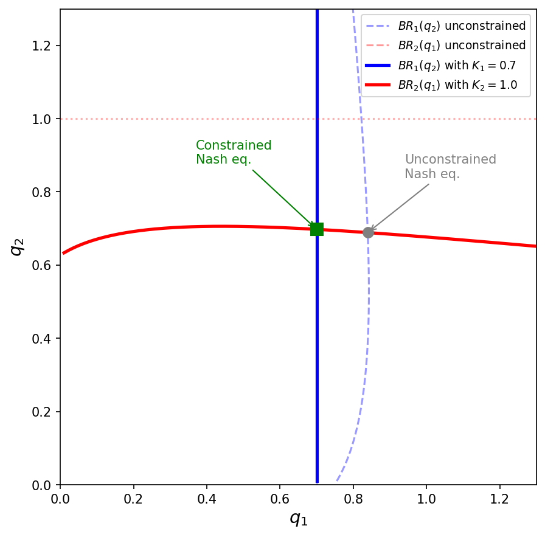
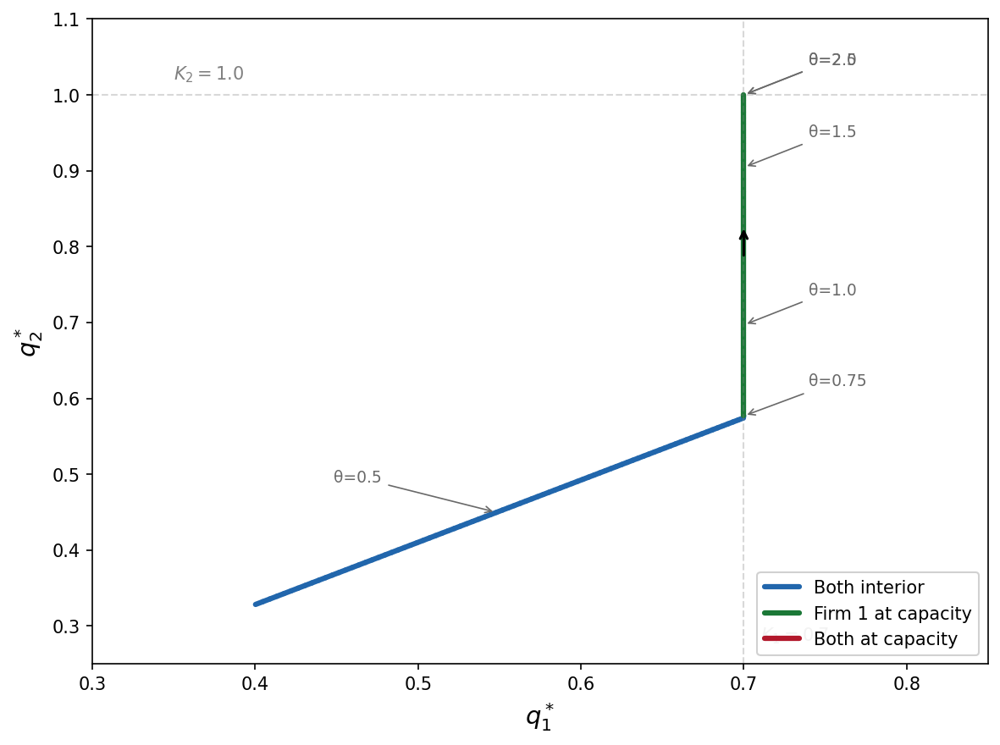

Code
function f!(F, x) # We need to program the memory-efficient version here
F[1] = 3*x[1]^2 + 2*x[1]*x[2] + 2*x[2]^2 + 4*x[1] - 2
F[2] = 2*x[1]^2 + 5*x[1]*x[2] - x[2]^2 + x[2] + 1
end;Complementarity Problems
In these problems, we have
And we are looking for an n-vector x \in [a,b] such that for all i = 1,\dots,n
\begin{align*} x_i > a_i \Rightarrow f_i(x) \geq 0 \\ x_i < b_i \Rightarrow f_i(x) \leq 0 \end{align*}
. . .
An economic interpretation
. . .
There are disequilibrium profit opportunities if
. . .
We obtain a no-arbitrage equilibrium if and only if x solves the complementary problem CP(f,a,b)
. . .
We can write out the problem as finding a vector x \in [a,b] that solves
\begin{align} x_i > a_i \Rightarrow f_i(x) \geq 0 \,\,\, \forall i = 1,...,n \notag\\ x_i < b_i \Rightarrow f_i(x) \leq 0 \,\,\, \forall i = 1,...,n \notag \end{align}
. . .
At interior solution, the function must be precisely be zero
Corner solution at the upper bound b_i for x_i \rightarrow f must be increasing in direction i
The opposite is true if we are at the lower bound
Most economic problems are complementarity problems where we are
. . .
The Karush-Kuhn-Tucker theorem shows that x solves the constrained optimization problem ( \max_x F(x) subject to x \in [a,b]) only if it solves the complementarity problem CP(f, a, b), where f_i = \partial F/\partial x_i
. . .
Let’s use a linear f to visualize what do we mean by a solution in complementarity problems
Case 1
What is the solution?
x^{*} = a, with f(x^{*}) < 0
Another way of seeing it: imagine we’re trying to maximize F
What would F look like between a and b?

Case 2
What is the solution?
x^{*} = b, with f(x^{*}) > 0
Once again, imagine we’re trying to maximize F
What would F look like between a and b?

Case 3
What is the solution?
Some x^{*} between a and b, with f(x^{*}) = 0
What would F look like between a and b?

Case 4
What is the solution?
Actually, we have 3 solutions:
What would F look like between a and b?

A complementarity problem CP(f, a, b) can be re-framed as a rootfinding problem
\hat{f}(x) = min(max(f(x),a-x),b-x) = 0
. . .
Let’s revisit those 4 cases to understand why this works
Case 1
\hat{f}(x) = min(max(f(x),a-x),b-x) = 0
\rightarrow The solution is x^{*} = a

Case 2:
\hat{f}(x) = min(max(f(x),a-x),b-x) = 0
In this case, f(x) > 0 for all x \in [a,b]
\rightarrow The solution is x^{*} = b

Case 3:
\hat{f}(x) = min(max(f(x),a-x),b-x) = 0
In this case, f(a) > 0, f(b) < 0
\rightarrow The solution is some x^{*} \in (a, b)

Case 4:
\hat{f}(x) = min(max(f(x),a-x),b-x) = 0
In this case, f(a) < 0, f(b) > 0
\rightarrow We have the same 3 solutions

Once \hat{f} is defined, we can use Newton’s or quasi-Newton methods to solve a CP
If using Newton, we need to define the Jacobian \hat{J}(x) with row i being
where I is the identity matrix
Rootfinding with \hat{f} works well in many cases but can be problematic in others
One problem is that \hat{f} has nondiferentiable kinks. This can lead to slower convergence, cycles, and incorrect answers1
A workaround is to use an alternative function with smoother transitions, such as Fischer’s function
\tilde{f}(x) = \phi^{-}(\phi^{+}(f(x), a-x), b-x)
where \phi_i^\pm(u, v) = u_i + v_i \pm \sqrt{u_i^2 + v_i^2}

We can use NLsolve.mcpsolve to solve CPs for us.2 Let’s see an example of f:\mathbb{R}^2\rightarrow\mathbb{R}^2
\begin{align*} f_1(x_1, x_2) & = 3x_1^2 + 2x_1x_2 + 2x_2^2 + 4x_1 - 2 \\ f_2(x_1, x_2) & = 2x_1^2 + 5x_1x_2 - x_2^2 + x_2 + 1 \end{align*}
function f!(F, x) # We need to program the memory-efficient version here
F[1] = 3*x[1]^2 + 2*x[1]*x[2] + 2*x[2]^2 + 4*x[1] - 2
F[2] = 2*x[1]^2 + 5*x[1]*x[2] - x[2]^2 + x[2] + 1
end;Let’s check the solution to the standard rootfinding problem using Newton’s method
using NLsolve;
NLsolve.nlsolve(f!, [1.0; 1.0], method=:newton)Results of Nonlinear Solver Algorithm
* Algorithm: Newton with line-search
* Starting Point: [1.0, 1.0]
* Zero: [-0.13736984903421828, 1.1872338075744588]
* Inf-norm of residuals: 0.000000
* Iterations: 7
* Convergence: true
* |x - x'| < 0.0e+00: false
* |f(x)| < 1.0e-08: true
* Function Calls (f): 8
* Jacobian Calls (df/dx): 8Getting back to CPs, let’s impose non-negativity bounds on x_1 and x_2 but no upper bounds (i.e., b = \infty)
a = [0.0; 0.0]; b = [Inf; Inf];
r = NLsolve.mcpsolve(f!, a, b, [1.0; 1.0], method=:newton, reformulation=:minmax)Results of Nonlinear Solver Algorithm
* Algorithm: Newton with line-search
* Starting Point: [1.0, 1.0]
* Zero: [0.3874258867227982, 0.0]
* Inf-norm of residuals: 0.000000
* Iterations: 10
* Convergence: true
* |x - x'| < 0.0e+00: false
* |f(x)| < 1.0e-08: true
* Function Calls (f): 17
* Jacobian Calls (df/dx): 10We can get the value of the root using r.zero. Checking f(x^*)
r.zero2-element Vector{Float64}:
0.3874258867227982
0.0return_f = zeros(2);
f!(return_f, r.zero);
return_f2-element Vector{Float64}:
3.241851231905457e-14
1.300197635405893So the non-negativity constraint is binding for x_2 but not x_1
mcpsolve takes the same additional arguments nlsolve had: xtol, ftol, iterations, autodiff, show_trace, etc
In addition, it accepts argument reformulation, which can be smooth (default) or minmax
NLsolve.mcpsolve(f!, a, b, [1.0; 1.0], method=:newton, reformulation=:minmax, autodiff=:forward)Results of Nonlinear Solver Algorithm
* Algorithm: Newton with line-search
* Starting Point: [1.0, 1.0]
* Zero: [0.38742588672279815, 0.0]
* Inf-norm of residuals: 0.000000
* Iterations: 10
* Convergence: true
* |x - x'| < 0.0e+00: false
* |f(x)| < 1.0e-08: true
* Function Calls (f): 17
* Jacobian Calls (df/dx): 10IMPORTANT NOTE. Miranda and Fackler’s textbook (and Matlab package) flip the sign convention for MCP problems. That’s because they are formulating it with an economic context in mind, where these problems arise from constrained optimization.
. . .
The conventional setup is (note the flipped inequalities)
\begin{align*} x_i > a_i \Rightarrow f_i(x) \leq 0 \\ x_i < b_i \Rightarrow f_i(x) \geq 0 \end{align*}
. . .
Solution. If you are using standard MCP solvers (like mcpsolve), flip the sign of your f function
Let’s revisit our duopoly example from Lecture 3.2 and add capacity constraints
. . .
Same setup as before:
. . .
New: each firm has a capacity constraint q_i \in [0, K_i]
The KKT conditions for firm i’s problem are exactly the complementarity conditions
\begin{align*} q_i > 0 &\Rightarrow \frac{\partial \pi_i}{\partial q_i} \leq 0 \\ q_i < K_i &\Rightarrow \frac{\partial \pi_i}{\partial q_i} \geq 0 \end{align*}
. . .
where marginal profit is
f_i(q_1, q_2) = \theta Q^{-1/\epsilon} - \frac{\theta}{\epsilon} Q^{-1/\epsilon-1}q_i - c_i q_i
. . .
This is CP(f, a, b) with a = (0, 0) and b = (K_1, K_2)
mcpsolveRecall that NLsolve.mcpsolve uses the convention
\begin{align*} x_i > a_i &\Rightarrow f_i(x) \geq 0 \\ x_i < b_i &\Rightarrow f_i(x) \leq 0 \end{align*}
But our marginal profit f_i > 0 means the firm wants to increase q_i. At the upper bound q_i = K_i, we expect f_i \geq 0 (wants to produce more but can’t)
. . .
The KKT convention has the opposite sign: q_i < b_i \Rightarrow f_i \geq 0, but mcpsolve expects f_i \leq 0
We need to pass -f to mcpsolve
Without constraints, the Nash equilibrium is (q_1^*, q_2^*) \approx (0.84, 0.69)
But firm 1 (the low-cost firm) can’t produce more than K_1 = 0.7!
. . .
The constrained equilibrium: q_1^* = 0.7 (at capacity) and q_2^* \approx 0.70 (interior)
. . .
This is precisely the complementarity structure: firm 1 is at the upper bound with f_1 > 0, while firm 2 is interior with f_2 = 0
NLsolveWe define the functions kind of like before, but now using a vector of parameters and flipping the sign convention
epsilon = 1.6; c = [0.6; 0.8]; theta = 1.0; K = [0.7; 1.0];
function neg_foc!(F, q)
Q = sum(q)
for i in 1:2
# NOTE: we flip the sign of f_i to match mcpsolve's convention
F[i] = -(theta * Q^(-1/epsilon) - (theta/epsilon) * Q^(-1/epsilon - 1) * q[i] - c[i] * q[i])
end
endneg_foc! (generic function with 1 method)NLsolveusing NLsolve
a = [0.0; 0.0]; b = K;
r = NLsolve.mcpsolve(neg_foc!, a, b, [0.2, 0.2], method=:newton, autodiff=:forward)Results of Nonlinear Solver Algorithm
* Algorithm: Newton with line-search
* Starting Point: [0.2, 0.2]
* Zero: [0.7000000005741004, 0.6976530167583798]
* Inf-norm of residuals: 0.000000
* Iterations: 5
* Convergence: true
* |x - x'| < 0.0e+00: false
* |f(x)| < 1.0e-08: true
* Function Calls (f): 6
* Jacobian Calls (df/dx): 5Remember to re-flip the sign of f to match the KKT convention
F_check = zeros(2); # Create a vector to store the value of f at the solution
neg_foc!(F_check, r.zero); # Compute f at the solution
println("f(q*) = $(-F_check)")f(q*) = [0.13727104736212875, -1.489608436600065e-11]. . .
. . .
Compare with the unconstrained solution from Lecture 3.2: [0.8396, 0.6888]
Without the constraint, firm 1 would produce \approx 0.84 > K_1
With capacity constraints, best response functions become truncated

Now let’s ask: what happens to the equilibrium as demand increases?
We vary \theta from 0.3 to 3.0
. . .
As \theta rises, both firms want to produce more. Three regimes emerge:

using Plots
thetas = range(0.3, 3.0, length=100)
q1_path = Float64[]; q2_path = Float64[];
q_init = [0.3; 0.25]
for θ in thetas
function neg_foc_theta!(F, q)
Q = sum(q)
for i in 1:2
F[i] = -(θ * Q^(-1/epsilon) - (θ/epsilon) * Q^(-1/epsilon - 1) * q[i] - c[i] * q[i])
end
end
r = NLsolve.mcpsolve(neg_foc_theta!, a, b, q_init, method=:newton, autodiff=:forward)
push!(q1_path, r.zero[1])
push!(q2_path, r.zero[2])
q_init = r.zero # warm start for next iteration
endplot(collect(thetas), q1_path, label="q₁*", lw=2,
xlabel="θ (demand shifter)", ylabel="Equilibrium output")
plot!(collect(thetas), q2_path, label="q₂*", lw=2)
hline!([0.7], label="K₁", ls=:dash, color=:blue, alpha=0.5)
hline!([1.0], label="K₂", ls=:dash, color=:red, alpha=0.5). . .
The kinks in the equilibrium paths correspond to transitions between regimes where different capacity constraints become binding
. . .
mcpsolve uses a different sign convention from the standard KKT formulation. Always check the documentation and verify the solution makes economic sense. . .